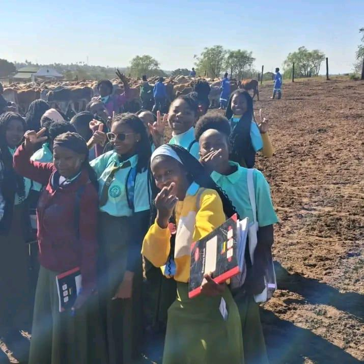

Um projecto educativo para sensibilizar a comunidade escolar sobre a importância da integridade, da honestidade e do combate à corrupção e ao suborno nas escolas.
Começar a ExplorarEste website foi desenvolvido no âmbito das orientações para websites sobre temas escolares. O tema escolhido é a corrupção e o suborno no contexto escolar.

Alunos unidos pela educação e pelo respeito aos valores de integridade
Explicar o que é a corrupção e o suborno no ambiente escolar e quais as suas formas mais comuns.
Apresentar medidas práticas para prevenir e combater estas práticas na escola.
Promover uma cultura de honestidade, transparência e responsabilidade entre alunos, professores e direcção.
Causas, consequências e impacto da corrupção e do suborno na escola.